A 70.5 second portfolio film, narrated by this site's own command bar and swum through by its fish. The hero oval collapses into the search bar, each section is a question typed over the last one, and the answers are the work. Its thesis is the thread through everything I make: freehand expression meets structured data.
How it was made
The film is the real site, rendered one frame at a time on a virtual clock. The edit is a plain-text script, the music is a plain-text score of synths built from numbers, and the melody started as one I sang. I directed and edited it in a browser editor built for it as we went, with Claude Code writing the engine, the editor and the tests from my notes.
21days from the first cut to the release candidates, with work on 16 of them
62commits to the reel, about 19,600 lines written and 4,500 removed
207saves of the script in the editor
985saves of the score: every knob, clip and note moved
22test suites guarding the film, the editor and the music
Same Moment, Five Versions
Each still is rendered from the code as it stood on that day, at the same point in the scene. Pick a moment, then a version.
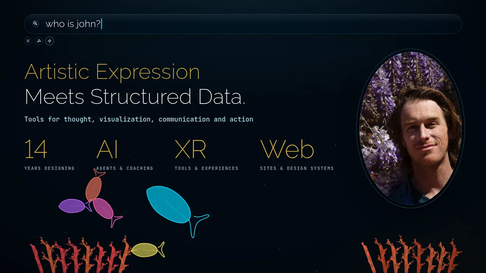
How It Grew
Sep 26cut 1 · 70.0 sbffc5a9
Cut 1: one outline, many windows
The first reel ran 70 seconds on a 96 BPM grid. A single outline unfolded out of each chapter's nav shape into a window onto the work, then folded into the next shape. One tank of the site's own fish engine swam underneath, and the loop drawn in the first second became the fish that swims the whole reel.
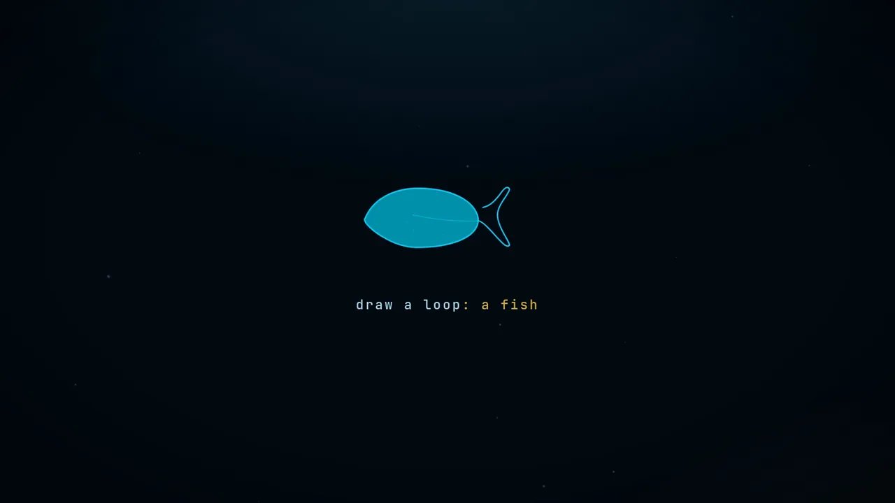
0:03 · draw a loop: a fish
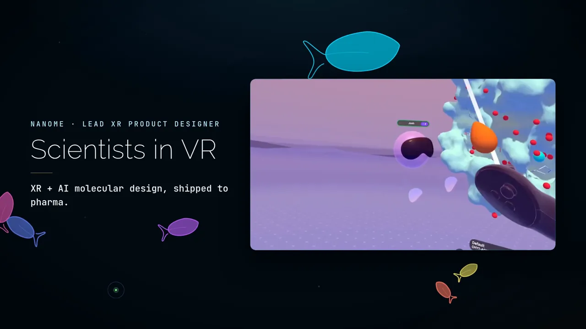
0:20 · the window onto the work
Sep 26cut 2 · 60.0 sf04cc68
Cut 2: the command bar narrates
The same night, cut 2 handed the narration to the site's own search bar. The hero oval collapses into the bar, and each section is a question typed over the last one. Its thesis became the spine of everything after: freehand expression meets structured data. The drawn fish carries a live data chip, read off the engine.
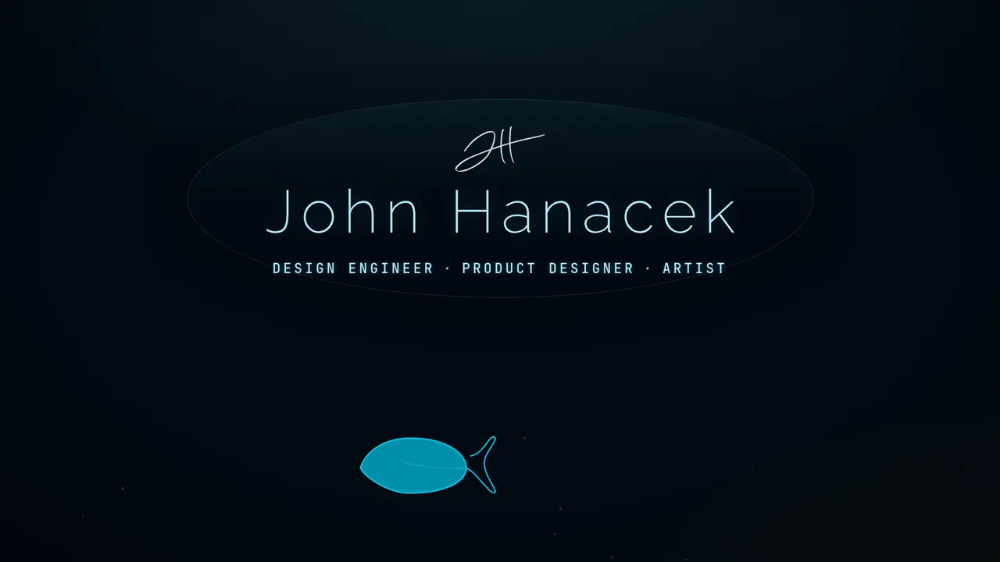
Title · the hero oval, before it becomes the bar
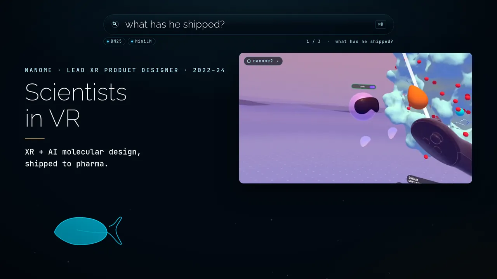
what has he shipped? · the first answer layout
Sep 2760.0 s046a6c0
The edit becomes a text file
The cut moved out of JSON into a plain-text script: one line per line on screen, scenes and beats in seconds, so a change of length ripples through. The preview became something tools could drive, and the first timeline appeared under it.
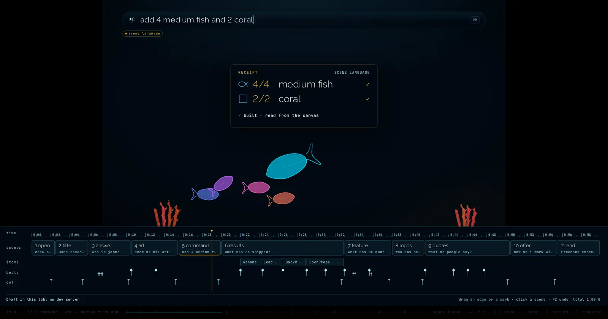
The first timeline · scenes, items and beats as ticks
Sep 2860.0 sf31832c
A score, and two more frames
Music arrived as a score of synths built from numbers: oscillators, filters and envelopes written as text and mixed offline into the film. There are no samples, so there is nothing to license. The same script learned to play in a square frame and a vertical one.
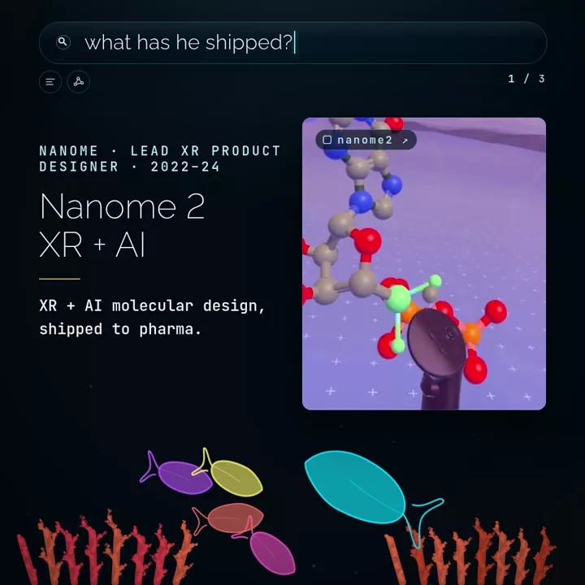
Square · 1080 × 1080, in the final cut
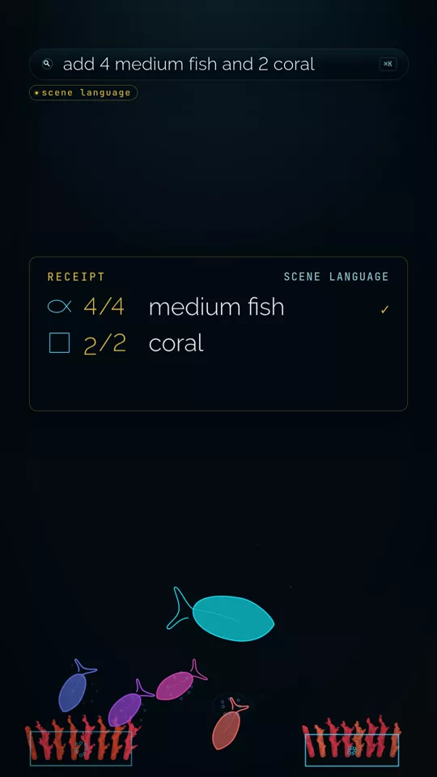
Vertical · 1080 × 1920, on Sep 29
Sep 2963.5 s77271e2
John starts editing
The preview, timeline and synth rack were packed into one page hosted on claude.ai that saves to its own store. My first session reordered the cut, rewrote the answer as "A capital-D Designer" and grew the film to 63.5 seconds. Every key became a button, scenes became cards, and a media picker opened every picture and clip in the repository.
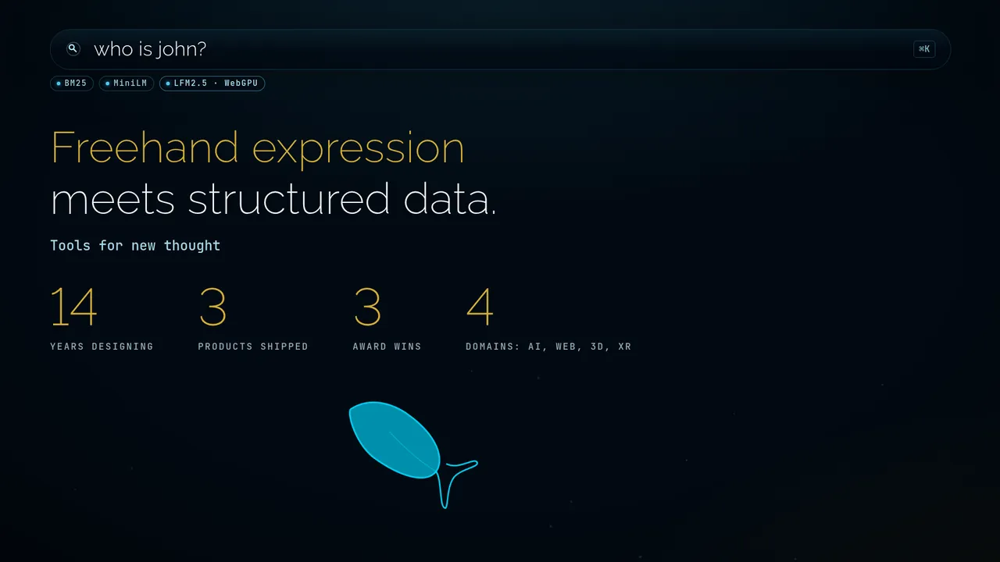
who is john? · the first rewrite
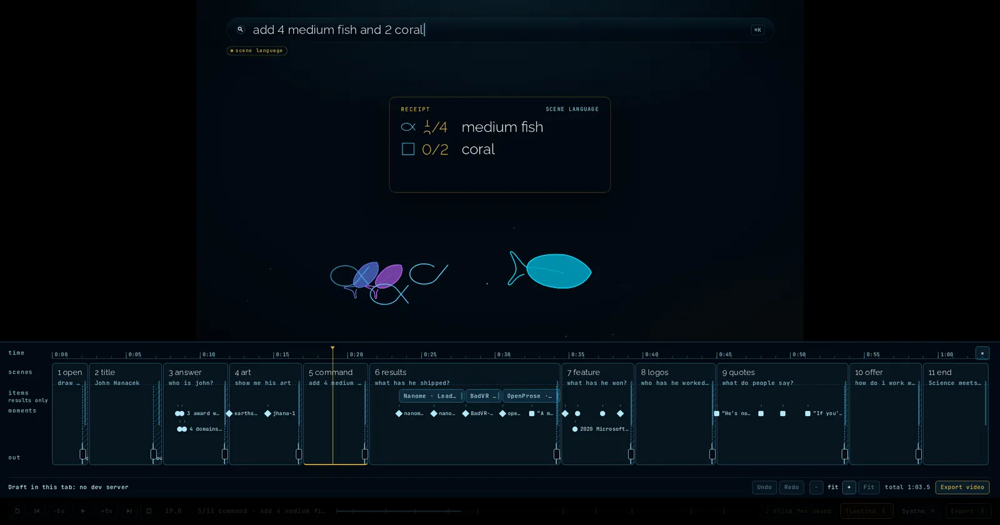
Scenes as cards · works, moments and exits per scene
Oct 263.5 se1b776e
Fish take direction, music becomes clips
Script lines started directing the fish: where to swim, what to look at, how to idle. In the timeline the music grew its own bars, with parts, pads and clips to drag, stretch and fade. Scenes became interchangeable, with transition cues and a shot list to reorder them.
"think ableton mixed with easy pad"my note on the music timeline
"the transitions take a long time give me some flexibility"my note that became the transition cues
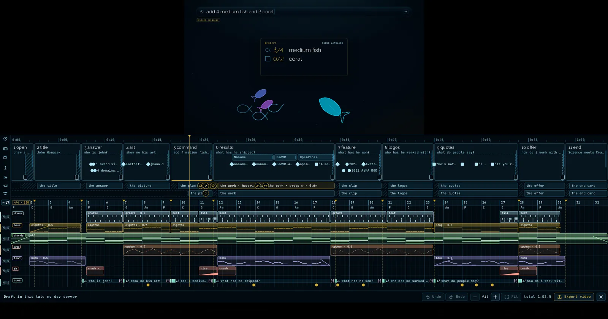
Music on its own bars · drums, bass, chords, arp, lead and fx as clips
Oct 561.75 → 67.75 s869d265
One song, the portrait, a sung melody
The arrangement was stripped to one coherent song. My portrait joined the answer, the frames grew 20%, and the school learned to swim under the copy instead of through it. Then I sang a melody. It was pitch-tracked, its key drift was taken out, and it was composed into the score as a take I could edit. A design-services scene joined after the coaching offer.
"the score skips and jumps and changes concepts ... strip the song itself down and keep it coherent throughout"my note on the music
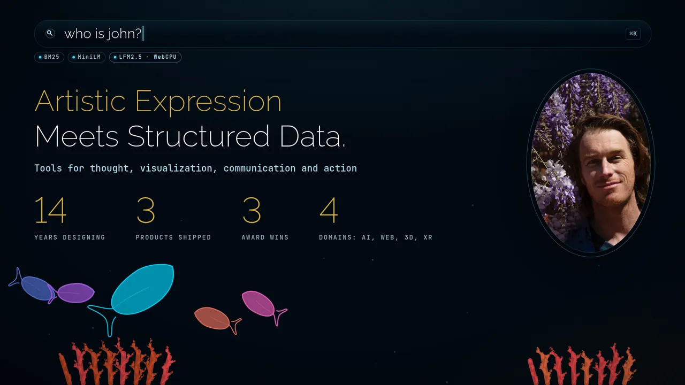
who is john? · the thesis beside the portrait
Oct 667.75 → 71.75 s73854c4
A piano roll, the real finalists, six quotes
The voice got a piano roll on the reel's own clock, so I could move, stretch and re-voice the melody note by note. The OpenProse beats switched to the actual finalist work, and two more endorsements brought the quotes to six.
"i need to be able to edit the notes/timing of this stuff like ableton to dial it in"my note that became the piano roll
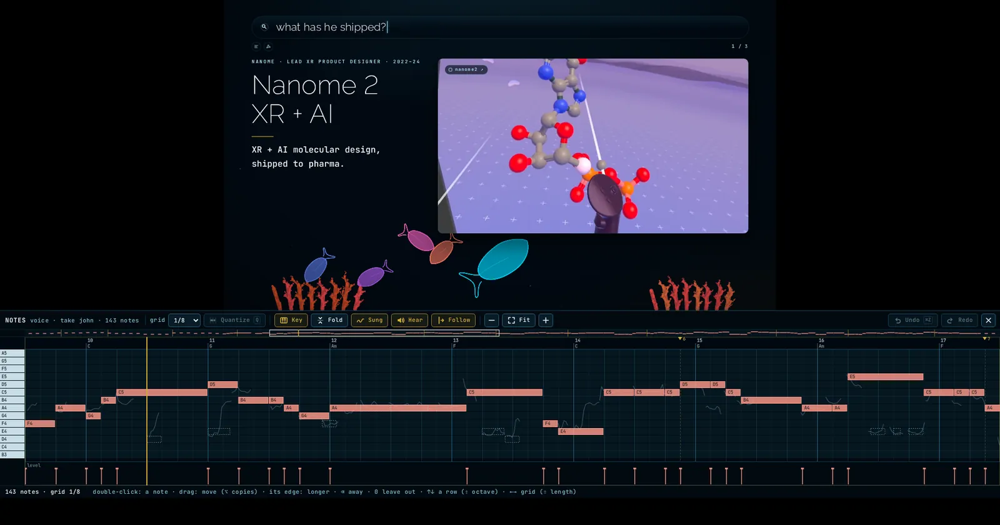
The first piano roll · what was sung, faint under the notes
Oct 1270.75 s3c8ca2f
Safe areas and frosted glass
Title-safe and action-safe guides came to the preview, with every line that crossed them outlined in red and a way to nudge a scene per frame. Every panel over the water became one frosted glass, so the fish read through it. The answer's figures became words: AI, Web and XR with their subdomains. The next day the client wall was balanced by measuring each logo's ink.
"i never want to clip the fish visual under the content"my note on the tank
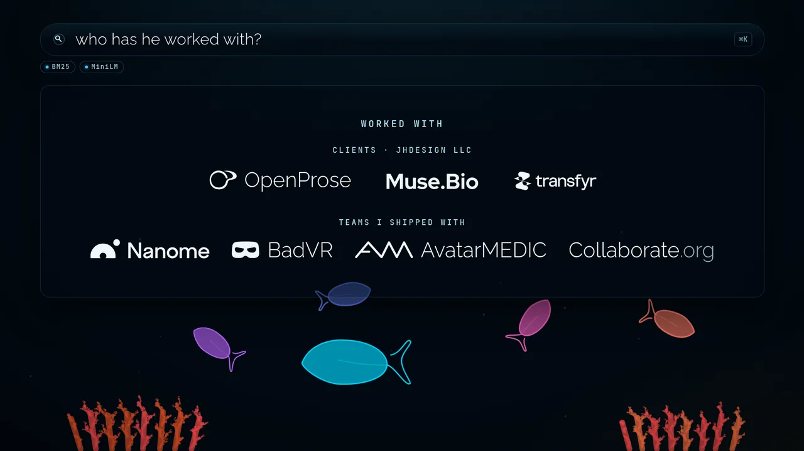
Before · Oct 5, solid panels
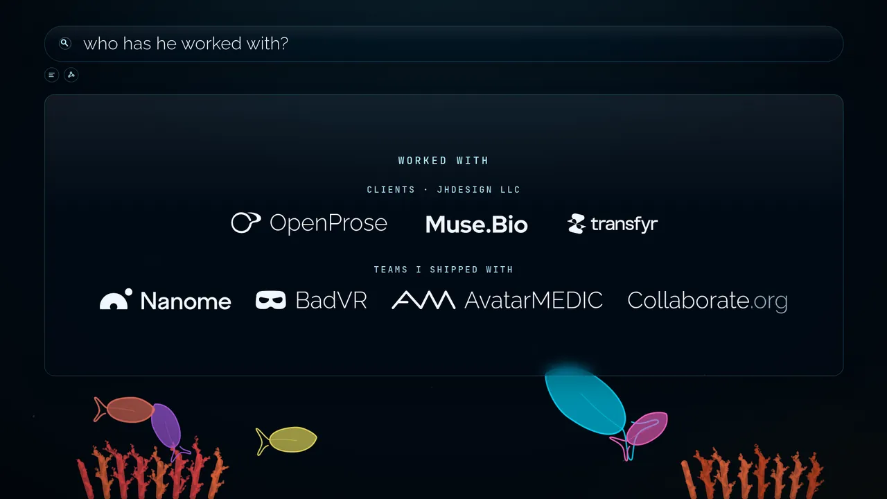
After · Oct 12, frosted glass
Oct 1670.5 s2cb06d4
On the beat, then release
Every question's Enter and every cut was put on the beat, and the melody was rephrased into calls and answers. The lead got a warmer voice. The OpenProse beats now show the exploration converging into the core style, and the first question types twice as fast to give the content room. The score was saved for the 985th time, and the release candidates were rendered at 60 frames a second.
"normalize to the beat and find the clear patterns and clean up drift and awkward transitions between motifs"my note on the music
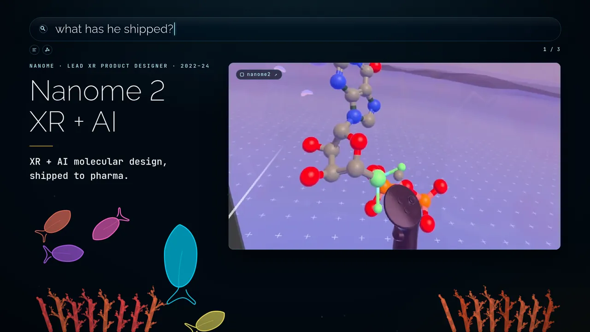
what has he shipped? · the final cut
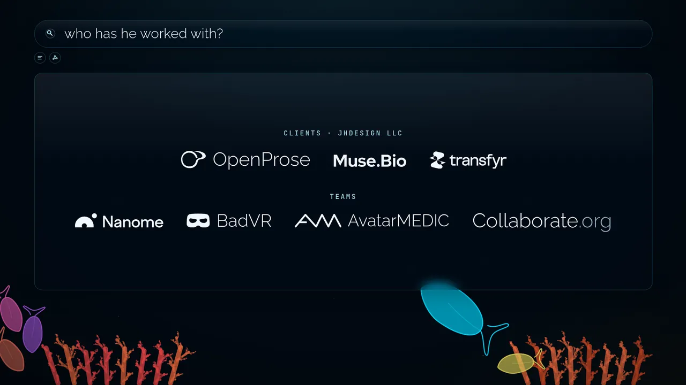
Teams · the wall balanced by its ink
The Editor
Everything below is one hosted page. Every change is one line of the script or the score, plays in place at once, and goes on one Undo.
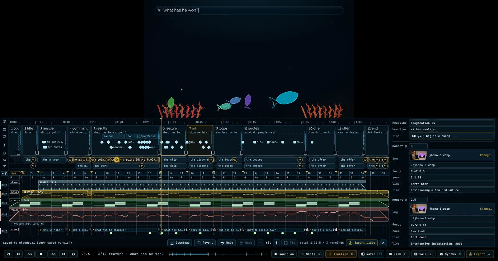
ETimeline
Scenes as cards with their works, moments and exits, a lane per fish, and the music on its own bars underneath.
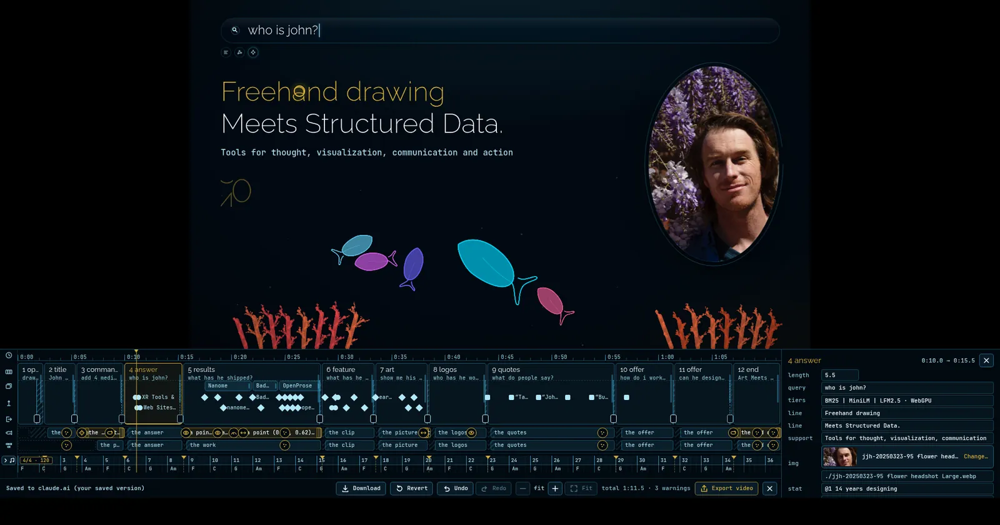
2×Words on the stage
Paused, double-click any line in the frame and type. It is written back into the script in the script's own words.
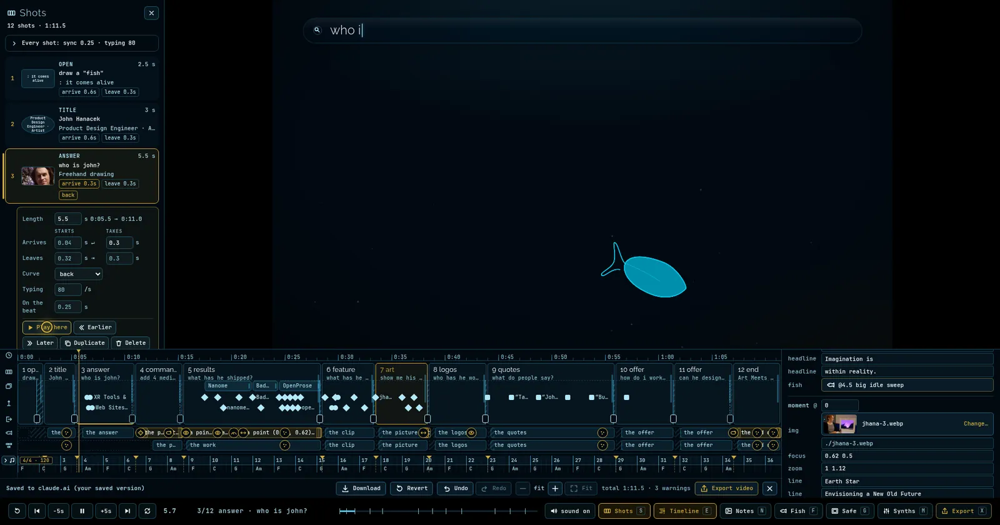
SShot list
Drag a shot to reorder the reel. Each shot has its own arrival, exit, curve and typing speed, or takes every shot's.
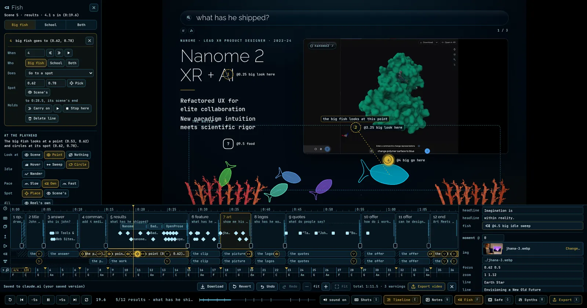
FFish
Direct the fish at the playhead: a spot to swim to, a thing to look at, an idle. Lines hold to their scene unless told to carry on.
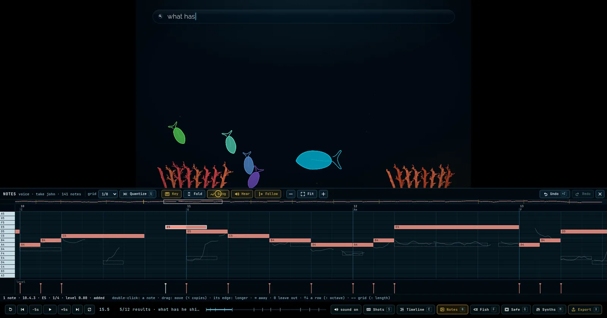
NNotes
The sung melody as a piano roll on the reel's bars and chords. Move, stretch, box, quantize, and hear each note as it moves.
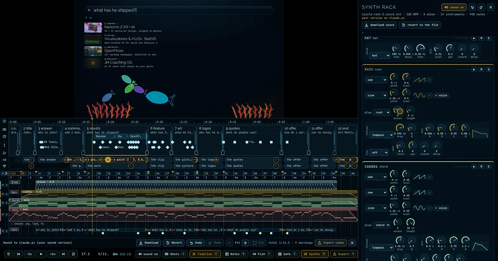
MSynth rack
Every sound built from numbers, drawn as knobs and meters. Each knob is one line of the score.
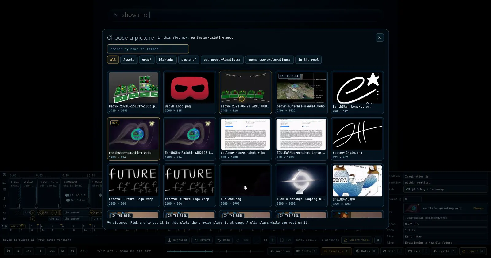
↗Media picker
Any picture or clip slot opens the whole library as thumbnails, searchable, clips playing on hover.
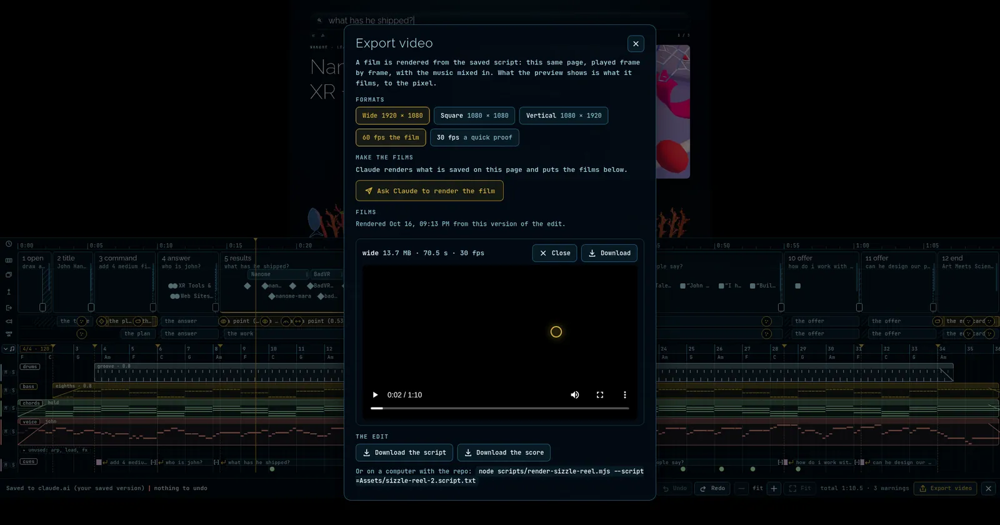
XExport
Ask Claude to render the saved edit. The films come back into the panel to play and download.
The walkthrough
77 seconds through every control set, recorded from the hosted editor.
Three Plain-Text Sources
The script
330 lines. A scene per block, a line per line on screen, beats in seconds. A checker names every mistake by line, and the cue sheet is printed from it.
The score
518 lines at 120 BPM in A minor. Synths and drums as numbers, parts with pads, clips on bars, and the sung take as one line per note.
The render
The rig is the site's own page. The renderer owns its clock, ticks the fish engine at 60 Hz, seeks every clip and films each frame. The music is mixed offline to about -14 LUFS.
![](data:image/svg+xml,%3Csvg role='img' aria-label='John Hanacek signature' xmlns='http://www.w3.org/2000/svg' viewBox='0 0 150 75'%3E%3Cpath fill='%23ffffff' d='m148.6 13.3c-0.3-0.6-2.9 0.3-3.7 0.4l-0.4 0.2-0.8 0.1c-0.2-0.2-1 0.4-1.1 0.2l-0.8 0.3h-0.3l-1.1 0.3-0.7 0.1-0.9 0.3h-0.7l-0.8 0.3h-0.7l-0.7 0.3h-0.9l-0.6 0.3h-0.8l-0.8 0.3-0.9 0.1-0.8 0.2-0.7 0.1-0.3 0.2-0.6-0.1-0.2 0.3h-0.9l-0.8 0.3-0.3-0.1-1 0.4-0.4-0.1-0.3 0.2h-0.5l-1.2 0.4-0.9 0.1-1.1 0.3-0.9 0.1-1.6 0.4h-0.4l-0.4 0.2h-0.4l-1.2 0.3-2.4 0.5-1.4 0.4-1.4 0.2-1.2 0.4h-0.4l-0.9 0.3-0.6 0.1-2.1 0.5-1 0.4-1 0.1-1 0.4h-0.3l-0.4 0.3h-0.4l-2 0.6-0.9 0.1-1.1 0.5-1.2 0.2-0.8 0.3h-0.5l-0.8 0.4-0.6 0.1-2 0.6-0.2-0.2v-0.9h-0.2l0.3-0.4-0.2-0.4 0.2-0.4-0.2-0.1 0.1-2.1-0.2-0.1 0.2-0.5-0.2-0.2 0.2-0.4-0.2-0.3 0.3-0.2-0.2-0.4 0.1-3.5v-1.1l0.3-0.3-0.2-0.4 0.2-1.6 0.1-3.5 0.2-2 0.2-0.4 0.1-2.1 0.2-0.5 0.1-1.9 0.7-0.5c0.2-0.2 0.2-1.1 0-1.1-0.4-0.3-1.9-0.5-2.3 0-0.3 0.5-0.6 1.6-0.6 2.3l-0.1 0.2v1l-0.2 0.3-0.2 1.7-0.1 0.3-0.1 3.1-0.2 0.1v2l-0.2 0.3-0.1 3.1-0.2 0.2v3.1h0.2l-0.4 0.6 0.3 0.3-0.2 0.5 0.2 0.2-0.2 0.4v3l0.2 0.1-0.2 0.4v2.6l0.2 0.3-0.5 0.4-0.3-0.1-0.6 0.4-0.8 0.1-1 0.5-0.5-0.1-0.2 0.3-0.6-0.1-0.1 0.3-0.6-0.1-0.2 0.3-0.4-0.1-0.2 0.3-0.4-0.1-0.2 0.3h-0.4l-1.8 0.5h-0.3l-0.7 0.4-2.3 0.5-0.2-0.8 0.2-0.6-0.2-0.3 0.2-0.2 0.1-3.6 0.2-0.2-0.1-0.9 0.2-0.3-0.2-0.4 0.2-0.1-0.1-1.1 0.2-0.5-0.1-1 0.3-0.4-0.2-0.6 0.2-0.1 0.2-3.4 0.2-0.9v-0.8l0.2-0.3 0.1-2.1 0.2-0.8 0.2-0.6 0.1-1.5 0.2-0.4 0.1-0.7 0.3-0.2c0.3-1.6 1.6-1.1 1.2-2.5-0.5-0.6-1.9-0.9-2.5-0.5-0.6 0.7-1 2.3-1.3 3.3l-0.1 1-0.2 0.2-0.1 1.2-0.2 0.3v0.9l-0.2 0.3v0.8l-0.2 0.1-0.1 2.2-0.2 0.1-0.1 2-0.2 0.1-0.1 2.6-0.1 0.1v1.9l-0.2 0.3v2l-0.3 0.5 0.2 0.2-0.1 3.2h-0.1l0.1 1.5-0.2 0.2 0.2 1.1-0.3 0.3v0.2l-1.3 0.4-0.2 0.2h-0.5l-0.5 0.3-0.8 0.1-1.9 0.7-0.5 0.3h-0.5l-2.4 0.9-1.3 0.5-1.2 0.2-1.7 0.7-0.1-0.2 0.5-1.4 0.6-0.8 0.4-1.4 0.3-0.6v-0.4l0.6-1.7v-0.4l0.4-0.2v-0.5l0.6-1.4 0.1-1 0.4-1.1 0.1-1.5 0.3-0.4 0.1-1.5 0.2-0.3 0.1-2.2 0.2-0.5-0.1-0.7 0.2-0.2-0.1-0.4v-2.2l-0.2-0.5v-1.1l-0.3-0.7v-0.6l-0.3-0.5c-1.1-2.3-3.1-3.3-6.2-3.5h-2.8l-0.2 0.1c-1.3 0.2-3.5 0.6-4.7 1.1l-0.3 0.2-0.5 0.1-2.2 0.9-0.1 0.2-0.7 0.2-1 0.6-2.5 1.2-1.5 0.9-0.3 0.1-1.8 1.1-0.3 0.1-0.3 0.3-2.7 1.6-0.7 0.6-1.7 1-3.2 2.5-0.3 0.2-1.4 1.2-1.6 1.6-0.3 0.1-0.1 0.4-1.5 1.3-0.4 0.5-0.2 0.4-0.5 0.3-0.7 0.9-0.2 0.1v0.3l-1.2 1.5-0.4 0.2-1 1.3-0.3 0.2-0.7 0.9-1.2 1.3-0.2 0.2-0.6 0.9-0.6 0.6-0.1 0.4-0.4 0.3-2.6 3.8c-0.5 1.3 1.1 2.1 1.5 1.8s0.6-1 0.9-1.5l0.3-0.2 0.2-0.6 1.1-1.4 0.3-0.1v-0.4l1.6-1.9 0.3-0.2v-0.2l0.6-0.6 0.8-1.1 0.4-0.1 0.1-0.4 0.9-0.8 0.2-0.5 1.2-1.3 0.2-0.3 0.8-0.7 0.3-0.5 3.1-3.1 1.2-1 0.1-0.2 2.2-1.8 0.2-0.1 1.9-1.5 1.7-1.2 0.4-0.4 2.1-1.3 0.5-0.4 1.1-0.6 0.5-0.4 1.3-0.7 0.4-0.3 1.5-0.8 0.7-0.5 2.4-1.2 0.5-0.2 0.3-0.3 3.4-1.3 2.3-0.7 0.3-0.1 1.2-0.3 1.2-0.2h0.5l0.1-0.1c0.7-0.1 2.4-0.1 2.8 0l0.2 0.2h0.4l1.3 0.4 0.9 1v0.4l0.4 0.7 0.2 2.2v1l-0.2 0.2 0.2 0.2-0.2 0.4 0.2 0.3-0.2 0.2 0.1 0.5-0.3 0.6c0.1 1.3-0.1 2.2-0.6 3.1l-0.1 1.4-0.3 0.3-0.2 2.6-0.8 1.7v0.5l-0.4 0.8-0.1 1.1-0.4 0.9-0.2 0.7-0.2 0.1-0.2 0.9-0.4 0.7v0.4l-0.4 0.6-0.1 0.6-0.3 0.3-0.8 1.9-0.5 0.4-0.1 0.1-1.2 0.5-0.7 0.1-2.7 1.1h-0.3l-0.4 0.3-0.8 0.2-0.9 0.4h-0.4l-0.3 0.3-1.3 0.4-0.3 0.2h-0.4l-0.7 0.4-1.3 0.4-0.3 0.3h-0.5l-0.5 0.3-3.3 1.1-0.3 0.2-0.7 0.2-0.7 0.5-1 0.2-0.5 0.4h-0.5l-1 0.4h-0.3l-0.2 0.4-0.8 0.1-0.5 0.3-0.5 0.1-0.4 0.3-0.6 0.1-0.2 0.2-0.9 0.3-0.3 0.2h-0.3l-0.6 0.4-0.7 0.2-1.5 0.7-1 0.3-0.3 0.2-1.1 0.4-1.8 0.9-0.5 0.1-0.2 0.3-0.6 0.1-0.7 0.5-0.5 0.1-0.8 0.5-0.5 0.1-0.4 0.3-1.1 0.5-0.5 0.3-0.5 0.1-1 0.7-0.5 0.2-1 0.7-0.5 0.2-1.2 0.8-0.5 0.2-2.2 1.4-0.6 0.4-1.5 1.1-0.5 0.5-0.4 0.1-0.2 0.3-2.4 2-2.2 2-0.8 1-0.9 1c-0.6 0.9-1.9 3-1.3 5.2l1.1 1.3 1.4 0.9 0.5 0.2 0.7 0.4 1.5 0.4h0.6l0.4 0.2h3.5 0.3l0.1-0.1 0.5 0.2 0.2-0.2h1.2 0.2l0.3-0.2 1.2-0.1 0.8-0.3h0.7l0.5-0.2 1-0.1 0.6-0.3h0.4l1.1-0.4 0.9-0.2 1-0.5 0.6-0.2 0.7-0.3 0.7-0.2 0.5-0.3 0.5-0.1 1.5-0.7 0.5-0.3 0.5-0.2 0.5-0.3 0.6-0.1 1.2-0.8 0.7-0.2 0.8-0.5 0.5-0.1 1.2-0.8 0.5-0.2 0.5-0.4 0.8-0.5 0.5-0.2 0.9-0.7 0.6-0.3 0.5-0.5 0.6-0.2 1.5-1.1 0.6-0.3 0.3-0.3 0.7-0.4 1.5-1.2 0.5-0.3 1.3-1.1 0.5-0.3 1.5-1.4 0.3-0.3 0.4-0.3 4.8-4.7 1-1.2 0.5-0.5 0.9-1.1 0.3-0.4 0.5-0.7 0.4-0.6 1-1.2 0.6-1.1 0.3-0.3 0.7-1.3 0.4-0.5 0.5-1.1 0.5-0.7 0.6-1.4c0.8-2 2.1-1.8 3.8-2.5l0.7-0.2 0.3-0.2 1-0.3h0.4l0.3-0.2 0.8-0.2 0.3-0.2 1.9-0.5 0.5-0.2 0.6-0.1 0.7-0.4 0.7-0.1 0.5-0.2 0.5-0.1 0.8-0.4 1-0.3 0.2 0.3-0.2 0.6 0.3 0.6-0.1 0.5 0.2 0.3v1.5l0.2 0.1-0.1 0.3 0.1 3.1 0.2 0.9v0.5h0.2l-0.2 0.5 0.2 0.1 0.1 1.6h0.1l0.1 1.4 0.2 0.5v0.7l0.2 0.3v0.6l0.2 0.2 0.1 1.1 0.2 0.2 0.1 1 0.2 0.1v0.7l0.3 0.5 0.1 0.9 0.2 0.1 0.5 1.8 0.2 0.2 0.1 0.6 0.3 0.5 0.1 0.5 0.4 0.4v0.3l0.2 0.3c0.6 1 1.9 3 2.6 3 0.5 0.1 1 0 0.9-0.3 0.1-0.3-0.7-1-1.2-2.3l-0.7-0.9-0.5-1.5-0.3-0.4v-0.4l-0.2-0.2-0.1-0.6-0.3-0.5v-0.5l-0.3-0.5v-0.4l-0.7-2.4v-0.6l-0.2-0.3-0.1-1.3-0.2-0.4v-1l-0.2-0.4-0.1-2.1-0.3-0.1 0.2-0.9-0.3-1.4v-1.2l-0.2-0.3 0.2-0.2-0.1-1.3 0.2-0.2-0.3-0.2v-2l-0.2-0.2 0.2-0.3-0.2-0.4 0.2-0.8-0.2-1.2 1-0.4h0.5l0.2-0.4h0.6l0.4-0.2h0.5l0.8-0.4 0.8-0.1 0.7-0.4h0.5l2.1-0.7 0.6-0.1 0.6-0.3 2.4-0.6 0.4-0.2v1l0.2 0.1v2.3l0.3 0.3-0.3 0.2 0.3 0.6-0.2 0.2 0.2 0.3v1.5h0.1v1.1l0.2 0.3v1.8l0.2 0.3v1.6l0.3 0.4 0.1 1.4 0.2 0.5 0.1 1.2 0.2 0.3v0.5l0.2 0.2v1l0.2 0.4 0.1 1.1 0.2 0.3 0.1 0.8 0.2 0.3 0.1 1 0.2 0.4 0.1 0.8 0.2 0.3 0.1 0.7 0.3 0.4v0.5l0.3 0.4 0.1 0.9 0.3 0.3v0.4l0.3 0.4v0.4l0.3 0.3v0.4l1.6 2.6c0.6 1 1.1 0.9 1 0.7 0.5-0.4-0.4-2.3-0.7-2.9l0.1-0.1-0.8-2.4-0.2-0.1v-0.5l-0.3-0.4-0.1-1-0.3-0.4v-0.6l-0.2-0.3v-0.5l-0.3-0.3-0.1-1.3-0.2-0.2-0.1-0.9-0.2-0.5v-0.6l-0.3-0.4-0.2-1.9-0.3-0.1 0.2-0.4-0.2-1.2h-0.2l0.2-0.5-0.2-0.3-0.2-2.7h-0.2l0.1-1.4-0.3-0.1v-2.3l-0.2-0.2v-3.5l-0.2-0.2 0.2-0.3-0.1-1.5-0.2-0.1 0.2-0.4-0.1-0.8 1.1-0.6 1.1-0.3 2.3-0.7 0.7-0.1 3.8-1 0.7-0.1 1.8-0.5 0.4-0.2 1.3-0.4h0.3l0.5-0.2 0.6-0.1 0.6-0.2h0.5l0.5-0.2 3.5-0.9h0.4l0.2-0.2h0.5l1-0.3h0.4l0.4-0.2 0.4 0.1 0.2-0.2h0.8l2.2-0.6 0.8-0.1 0.2-0.2 0.4 0.1 0.4-0.2h0.6l0.4-0.2h0.5l0.5-0.2 0.6-0.1 0.5-0.2 0.6-0.1 1-0.2 1.2-0.3h0.5l0.4-0.3h0.4l3.5-0.8h0.8l0.5-0.3 1-0.1 2.2-0.6 0.9-0.2h0.5l0.4-0.2 0.8-0.1 1.8-0.5 0.6-0.4v0.4l0.5-0.5h0.4l2.1-0.6 0.8-0.2 1.3-0.6 0.9-0.2 1.3-0.8 0.7-0.2v-0.5zm-91.1 27.3-0.7 1v0.4l-0.4 0.4-0.2 0.6-0.3 0.4-0.3 0.6-0.3 0.2-0.1 0.4-0.5 0.5-0.1 0.5-0.4 0.2-0.1 0.6-1.7 1.7v0.4l-2 2.1-0.3 0.4-4.5 4.1-1.1 0.9-0.4 0.4-0.5 0.3-1.7 1.4-0.3 0.1-0.1 0.3-0.6 0.2-2 1.5-2.3 1.5-0.5 0.3-0.2 0.2-0.3 0.1-2 1.3-0.7 0.3-1.5 0.9-0.5 0.4-0.5 0.2-1.3 0.7-0.5 0.2-1 0.6-0.5 0.1-0.7 0.5-3.3 1.4-0.7 0.2-0.5 0.3-0.5 0.1-1.2 0.4h-0.6l-0.4 0.3-0.6 0.1-1.7 0.7-1.9 0.4h-0.4l-1.2 0.7h-2.5l-0.9 0.8-0.1-0.2-1 0.1-1-0.2h-1l-1.5-0.4-0.5-0.2-0.5-0.5v0.2c-0.8-0.7-0.5-2.6 0.5-3.7l0.2-0.5 0.5-0.4 0.3-0.6 2.2-2.2 0.3-0.2 0.1-0.3 0.4-0.2 1.5-1.4 0.5-0.2 0.2-0.4 1.3-0.9 0.2-0.3 0.5-0.2 1-0.8 0.5-0.5 0.8-0.4 1-0.7 0.5-0.2 0.7-0.6 0.6-0.3 0.4-0.3 0.5-0.2 0.5-0.5 0.5-0.1 1.8-1.1 0.5-0.2 1.2-0.7 0.5-0.2 0.3-0.3 0.7-0.2 0.6-0.4 0.7-0.3 0.6-0.3 1.2-0.7 1.2-0.5 0.2-0.2 0.6-0.1 0.7-0.4 0.5-0.1 0.5-0.3 0.7-0.2 0.5-0.3 1.3-0.4 0.2-0.2 0.8-0.1 0.2-0.4 0.8-0.1 1.7-0.9 0.5-0.1 1-0.5 0.6-0.1 2.2-0.9 0.5-0.1 0.7-0.4 0.8-0.2 0.2-0.2 1-0.3 0.8-0.4 0.5-0.1 0.5-0.3 0.7-0.2 0.5-0.3 0.6-0.1 2.2-0.8 0.5-0.1 0.5-0.3 1.2-0.3 0.3-0.2 0.5-0.1 0.5-0.4 0.7-0.1 1.3-0.5 0.7 0.1v0.1l0.1 0.2-0.2 0.2z'/%3E%3C/svg%3E)